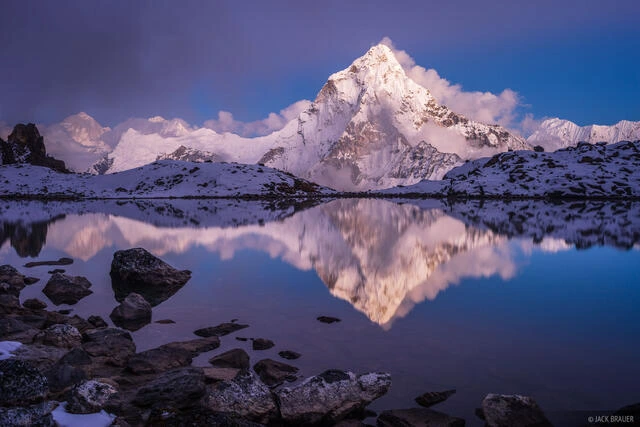

Головна
Ласкаво просимо

Подорожі - це не лише переміщення з однієї точки на карті в іншу. Це можливість побачити, як живуть люди в різних країнах, спробувати незвичну кухню, почути іншу мову та подивитися на власне життя під новим кутом. Кожна поїздка залишає по собі історії, фотографії та враження, до яких хочеться повертатися знову і знову.
Цей сайт створено для тих, хто любить відкривати нові місця або тільки планує першу велику поїздку. Тут зібрано розповідь про мої подорожі, добірку фотографій, практичні поради для мандрівників і контактна інформація для тих, хто хоче поділитися власним досвідом.
Ми почнемо з простих речей: як обрати напрямок, скільки часу потрібно на підготовку та які речі справді необхідні. Далі перейдемо до цікавіших тем - гірських маршрутів, морських узбереж і міських прогулянок.
Докладніше про автора сайту - на сторінці Про мене, а добірку світлин дивіться в Галереї.
Популярні напрямки

Кожен вид відпочинку має свою атмосферу. Ось основні напрямки, про які йдеться на сайті:
- Гори - піші маршрути, свіже повітря, панорамні краєвиди.
- Море - пляжний відпочинок, водні види спорту, смачна риба.
- Міста - архітектура, музеї, кав'ярні та вуличні ринки.
- Природа - ліси, озера та національні парки.
Поради щодо підготовки шукайте на сторінці Поради.
Найкращий сезон для поїздки

У таблиці наведено орієнтовні періоди для різних типів відпочинку.
| Тип відпочинку | Сезон | Бюджет |
|---|---|---|
| Гори (піші походи) | Червень - вересень | Середній |
| Морський пляж | Липень - серпень | Вищий за середній |
| Міські екскурсії | Квітень - жовтень | Середній |
| Зимові курорти | Грудень - березень | Високий |
Популярність напрямків (умовна оцінка)
Гори85%
Море90%
Міста70%
Природа75%